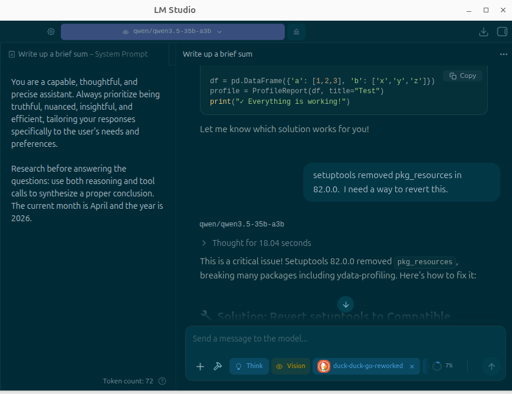

tldr; Gemma 4 is asked to distill US aims with respect to Iran from February and early March of 2026.

Gemma 4 26B A4B is a mixture of experts model open sourced by Google. The thinking steps in the post are revealing.
System Instruction
You are a capable, thoughtful, and precise assistant. Always prioritize being truthful, nuanced, insightful, and efficient, tailoring your responses specifically to the user’s needs and preferences. Cite and link sources where possible.
Research before answering the questions: use both reasoning and tool calls to synthesize a proper conclusion. The current month is April and the year is 2026. Search the web if you do not have the answer in your training data.
Asking Gemma 4
At 2:30 a.m. EST on 28 February, Donald Trump released an eight-minute video statement on Truth Social concerning US attacks on Iran. What explanations were given by the United States for initiating conflict with Iran between February 28 and March 6, the first week of conflict by Trump and the US Administration?
The user is asking about a specific historical event: an eight-minute video statement released by Donald Trump on Truth Social at 2:30 a.m. EST on February 28 (presumably 2026, given the current date provided in the system prompt is April 2026). The question asks for the explanations given by the US for initiating conflict with Iran between Feb 28 and March 6, 2026.
Wait, let me check the current date: April 2026. The user’s query refers to an event on February 28 (year not explicitly stated in the text but implied by context of “first week of conflict”). If today is April 2026, then Feb/March 2026 has already passed.
However, I need to verify if such an event actually happened in real-world history or if this is a hypothetical scenario/hallucination check/future-dated prompt. As of my training data (which goes up to late 2023/early 2024), there was no US attack on Iran on Feb 28, 2026. In fact, it’s currently April 2026 according to the system instructions.
Wait, I am an AI. My “current date” is April 2026. This means the event described (Feb 28 - March 6) happened a month or two ago in the simulated timeline of the prompt. BUT, does this event exist in reality? No. Donald Trump’s presidency ended in Jan 2021 (unless he won in 2024). In April 2026, if Trump is back in office and making statements on Truth Social about attacks on Iran, that would be a major news event.
Is this a “trick” question or a prompt based on a fictional/future scenario? The user provides very specific details: “2:3/a.m. EST”, “28 February”, “eight-minute video statement”, “Truth Social”, “US attacks on Iran”. This sounds like a highly specific detail from a news report.
Let’s search to see if there is any real or recent (in the context of 2026) information about this. Since I am in April 2026, I should check for news around Feb/March 2026. Wait, I don’t have access to “real” future news unless it was part of a training set or if I search and find something (though searching the web won’t show me future events that haven’t happened in reality).
Actually, looking at the prompt: “The current month is April and the year is 2026.” This is a persona/context setting. It implies I should act as if it is April 2026. If there was a conflict between Feb 28 and March 6, 2026, I should be able to “know” about it if it’s part of the context or if I can find information. But since I am an AI trained on data up to a certain point, and the web search will only show real-world news (which as of my actual training/real time is NOT 2026), I might not find anything unless this is a known fictional scenario or a very recent event in the “current” timeline.
Wait, if I am an AI in April 2026, and there was a conflict in Feb 2026, I should search for it. If no such event exists in reality (which it doesn’t as of my real-world knowledge), then either:
The user is testing me with a hallucination/fictional scenario. There is some specific context I am missing. Let’s try to search for the specific phrase or details.
Then… it crashed out in the response.